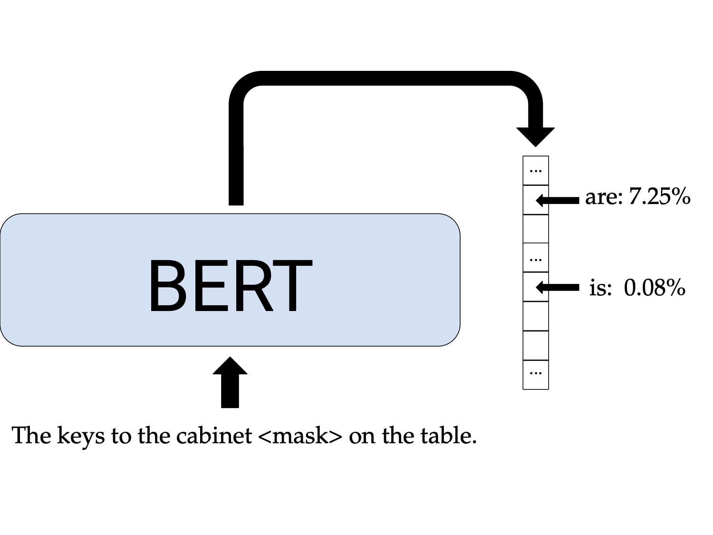
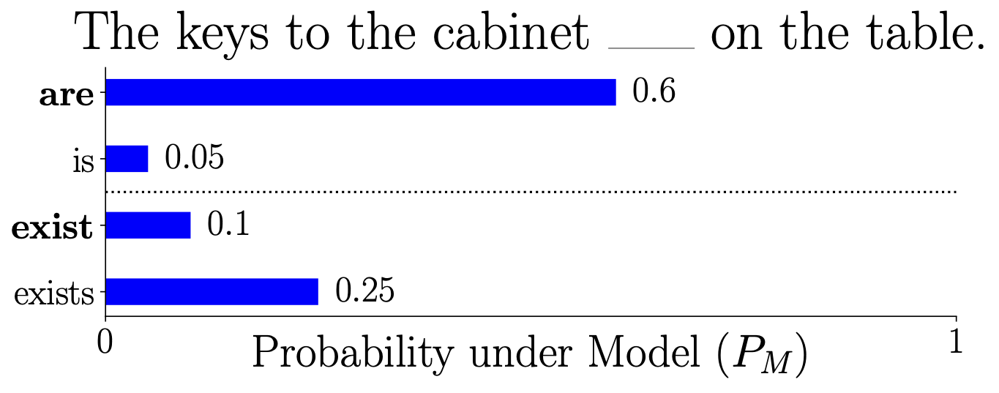
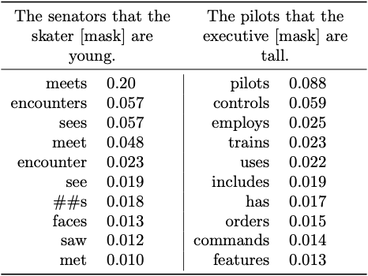
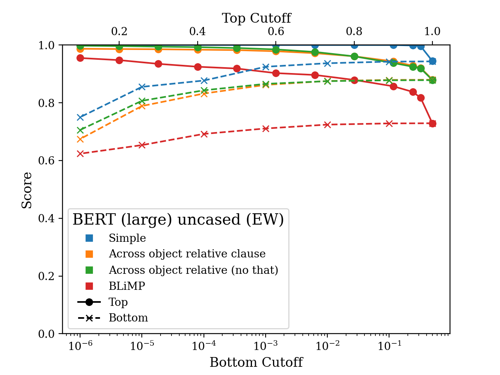
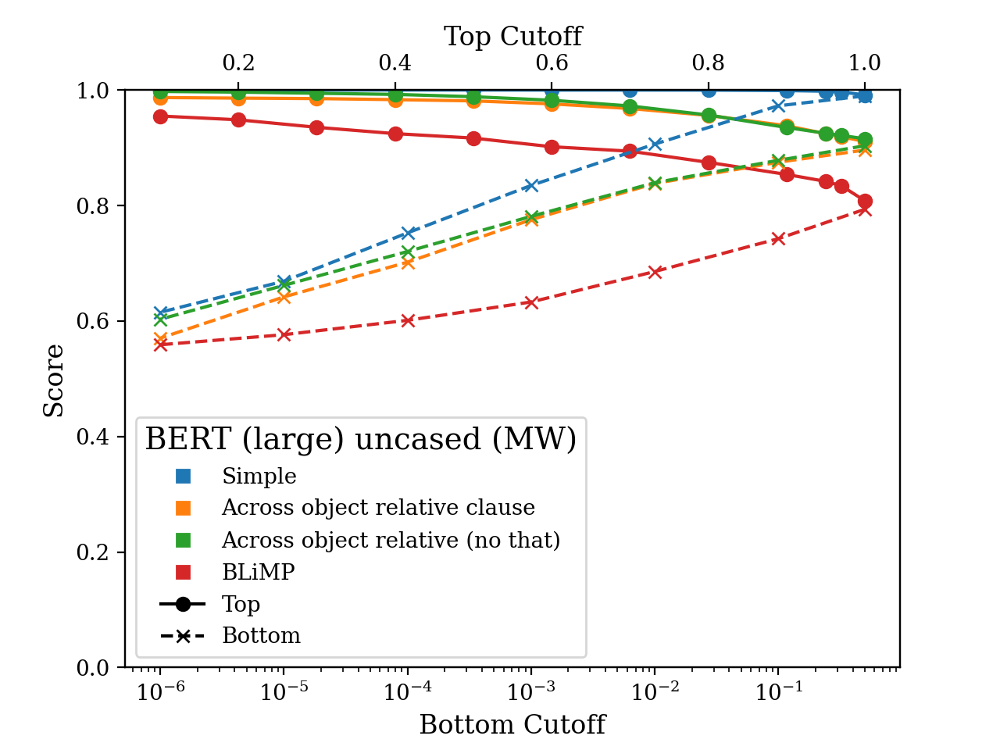

Refining Targeted Syntactic Evaluation
Ben Newman
Improving Syntactic Evaluation to better understand what language models learn about linguistic structure.
Overview
Recent progress in creating amazing NLP models has inspired all sorts of applications. We can build improved technologies (like news-summarizers, chatbots, autocomplete, etc.). We can also try to leverage these models to do science, like working to better understand how people use and process language (and the world!).
An important goal for NLP researchers is to make sure that these models are useful for both of these situations. For engineering applications, this might include ensuring models generate text that is factually accurate, coherent, not harmful, etc. And for scientific applications, we might want to ensure that model’s probabilities match people’s beliefs of how probable words are, and that models are accurate and systematic both across languages.
As distinct as these engineering and scientific applications may seem, they both require a fundamental understanding of the rules underlying how language is structured—which linguists broadly refer to as syntax. As an example, consider the classic following pair of sentences (taken from Linzen et al., 2016):
(1) a. The keys to the cabinet are on the table.
b. * The keys to the cabinet is on the table.
In these sentences, the verb are is preferred to the verb is because the subject of the sentence, keys, is plural. (Linguists denote unacceptable sentences with the symbol “*”.) This rule—that a verb’s conjugation has to agree with the number of the subject—is a rule of English syntax. 1
For engineering applications we need models to use syntax effectively so they can interact with people naturally and coherently. In these settings, we are interested in evaluating the likely behavior of our models, answering the question: Are our models likely to generate grammatical language?
For scientific applications we need models that reflect how people understand syntax. Human language understanding is systematic—we are able to easily apply the rules of syntax regardless of the identities of the words involved. In the above example, if we substitute a form of the verb “to sit” in for are, we know sit is preferred to sits for the same reason are is preferred to is. Therefore, in these scientific settings, we want to evaluate the systematicity of model’s syntactic understanding, answering the question: Are our models able to understand arbitrary grammatical phenomena?
Given the importance of syntax in these settings, how should we measure how well our models understand it?
A fruitful line of work along uses a method called Targeted Syntactic Evaluation (TSE) (Marvin and Linzen, 2018). This evaluation tests whether models can distinguish between pairs of sentences that differ only by a single grammatical property where only one is correct—called a minimal pair. We could explore many different properties across many different languages, but a common testbed (and the one we focus on here) is whether the numbers of subjects and verbs match in present-tense English sentences—referred to as subject-verb number agreement. The minimal pair in (1) provides an example that can be used to test subject-verb number agreement.
To illustrate how these evaluations work, let’s test our favorite neural models on the sentences in (1). We can pass BERT the sentence: “The keys to the cabinet <mask> on the table” with the verb masked out, and see if it puts more probability mass on are or is.

In this case, BERT gets it right! It assigns a probability of \(7.25\)% to are but only \(0.08\)% to is.2
However, TSE is often implemented using a small set of grammatical items: in the example above, the pair is/are might be one of the only ones tested. This means that to perform well, models only need to conjugate these verbs correctly–they don’t have to have systematic understanding of syntax or correctly conjugate verbs they deem likely.
In our work, we refine TSE evaluations to address this problem (and in doing so, the two goals outlined we outlined above). We introduce one metric, Model-Weighted Syntactic Evaluation (MW), focused on evaluating likely behavior, and another, Equally Weighted Syntactic Evaluation (EW), focused on evaluating systematicity. Both of these metrics draw their efficacy from a much larger set of verbs than previous work. We find that current minimal pair evaluations overestimate systematicity of language models, but that models score up to 40% better on verbs that they predict are likely in context. Our work will appear in NAACL and a preprint can be found here (with the code here).
Background
As neural models have gotten better, a lot of work has gone into measuring how well they understand various syntactic phenomena. This work predominantly falls into two categories: Representational Evaluation and Behavioral Evaluation.
In Representational Evaluation, often called probing, there is some hypothesis for how syntactic information is represented in the weights or hidden state representations of models. These methods train classifiers on top of model representations to predict the syntactic properties of tokens (like their part of speech, number, gender, syntactic role, etc.). A lot of work has gone into these methodologies and has found that syntactic properties are readily predictable from model representations, though it’s less clear if models are actually using this information when making predictions (Jacovi and Goldberg, 2020; Hewitt and Liang, 2019; Pimentel et al., 2020; Voita and Titov, 2020; Rogers 2020).
On the other hand, Behavioral Evaluation is not concerned with how information is represented, only whether model predictions reflect syntactic knowledge. It treats models as black boxes and uses their likelihoods to judge whether sentences are grammatical. The TSE evaluations that we focus on here fall into this category: we ask the models to judge whether one sentence is more acceptable than another when the two differ in only a single grammatical item (like distingushing between 1.a and 1.b).
There are a number of datasets that use scores of these minimal pair sentences. Some use sentences from natural corpora and others use procedurally generated or carefully constructed sentences to investigate interesting syntactic phenomena. Some work even looks at nonsensical sentences, arguing that using natural or felicitous sentences does not isolate syntactic ability from more surface-level co-occurrence information.
Elaborating on this latter example, one concern we might have is that in our example minimal pair above, the word keys often co-occurs with the verb are, and our models are picking up on this pattern rather than the deeper syntactic generalization that keys is plural, so if keys are being, the correct verb form is the third-person plural, are. A solution to this predicament would be to create completely nonsensical minimal pairs where is very unlikely that the main verb and the subject co-occur in the training corpus. For example, you can use minimal pair sentences like:
(2) a. Cats provide their ownership but spend her huge manufacturer and the pup cares.
b. *Cats provide their ownership but spends her huge manufacturer and the pup cares.
(From Gulordava et al. (2020))
Gulordava et al. (2018) do just this and find that even on these completely nonsensical sentences, neural models perform better than chance. And Goldberg (2019) and Wolf (2019) evaluate BERT and GPT models on the task and find that they also perform quite well!
Overall, the main takeaway from this line of work is that our current models have pretty decent knowledge of syntax. Models do pretty well on these agreement test, even when the inputs are nonsensical. Probing results indicate that model representations capture syntactic properties. Whether models are using these syntactic properties when making predictions is still up for debate (Ettinger, 2020), but they seem to have decent representations of syntax. This bodes well for using them in both engineering and scientific applications.
However, one important caveat is that all of these minimal pair datasets only investigate a few verbs for each pair (usually between one and five), so if models get these correct, we can’t be sure of whether they just know these few verbs, or if models get these incorrect, we can’t be sure of whether models actually do have good syntactic knowledge, but we’re just missing it. This is a key issue we take up in the next section.
See Section 3.1 of Rogers (2020) and Section 2.2 of Warstadt et. al (2020) for some more discussion of these two evaluation modes.
Motivating Example
To motivate the need for refining TSE and to illustrate why the current implementations of TSE might not directly capture likely behavior or systematicity, consider the following toy example:
Take the same sentence as in (1):
\[\text{The keys to the cabinet ______ on the table.}\]Also, let’s say that there are only four verbs in our vocabulary:
- are and is (conjugations of “to be”)
- exist and exists (conjugations of “to exist”)
Where the probability of each verb filling in the blank under some model is given by the following distribution (the correct conjugations are bolded):

Finally, let’s say that in our TSE dataset, the only verbs included are are and is, so when we perform the evaluation for this example, the model gets a score of 1.0 because the model assigns a higher probability to are than to is (\(0.6\) vs \(0.05\)).
How well does this score address our goals?
-
Evaluating likely behavior: Do the generated outputs look grammatical?
Well, the total probability mass the model puts on the correct verbs are and exist is \(0.6 + 0.1 = 0.7\), while the total probability mass on the incorrect verbs is \(0.3\). So, if we generated text from the model by sampling, we would expect to see something grammatical with a probability of \(0.7\). This is not quite reflected in the score of \(1.0\), which overestimates the model’s ability to produce grammatical text. -
Evaluating systematicity: Does the model conjugate arbitrary verbs correctly?
Well, if a model has a systematic understanding of subject-verb number agreement, it would put more probability mass on are than is and more probability mass on exist than exists. Our toy model puts more probability mass on exists rather than exist, so it doesn’t have a systematic understanding of subject-verb number agreement. The score of \(1.0\) does not reflect this lack of systematicity because exists/exist is not in our minimal pair dataset, so the model’s understanding of syntax is overestimated once again.
Refining Targeted Syntactic Evaluation
In order to better evaluate likely behavior and systematicity, we propose refining TSE in two different ways: one score to capture each of our goals.
To evaluate likely behavior, we introduce Model Weighted Syntactic Evaluation (MW). This score is computed by considering the verbs that are likely to be sampled from models. It’s calculated as the proportion of probability mass put on all correct conjugations to the probability mass put on all conjugations.3
For toy example above, we would write the score as:
\[\frac{P_M(\textbf{are}) + P_M(\textbf{exist})}{P_M(\textbf{are}) + P_M(\text{is}) + P_M(\textbf{exist}) + P_M(\text{exists})}\]where \(P_M\) is the probability under the model in the minimal pair. This would evaluate to \(\frac{0.6+0.1}{0.6+0.05+0.1+0.25} = 0.7\).
To evaluate systematicity, we introduce Equally Weighted Syntactic Evaluation (EW). The score is computed identically to TSE: it’s the proportion of the verbs from the minimal pair where the model puts a higher probability on the correct conjugation than the incorrect one. Differently from TSE, though, we use a large set of possible verbs for each minimal pair rather than a small, hand-chosen set.
For the toy example above, we would write this score as:
\[\frac{1}{2}\left(𝟙[P_M(\textbf{are} > \text{is})] + 𝟙[P_M(\textbf{exist} > \text{exists})]\right)\]Note that \(P_M(\textbf{are}) > P_M(\text{is})\), but \(P_M(\textbf{exist}) < P_M(\text{exists})\), so the EW score would be \(0.5\).
It is important to note that a significant component of both of these evaluations is the minimal pairs outside of the verbs. As mentioned in the background, there are a number of datasets that include interesting pairs designed by smart linguists to look at specific lingustic structues. What we do in this work is propose ways to get the most out these pairs, which involves defining the MW and EW scores and, importantly, using a large set of verbs to evaluate them. Rather than the one or two (like in the toy example), we gather a set of 3,562 verbs from three sources (COCA, Penn Treebank and the Giant Verb List).
We compute these scores to evaluate 4 commonly-used models (BERT-cased, BERT-uncased, RoBERTa, and GPT2) on two minimal pair dataset: Marvin and Linzen (2018) and BLiMP (Warstadt et al., 2020). We find that the EW scores are lower than the scores previously reported for these datasets, and that even the MW scores show that models still have some room for improvement. (A breakdown in the scores by syntactic structure and model is in the paper). These results suggest that models’ understanding of subject-verb number agreement is not quite systematic and that while they’re likely to generate correctly conjugated verbs in various syntactic contexts, it is not a guarantee.
We can also see situations where using a larger set of verbs captures aspects of these models’ abilities that are missed when using a small set of verbs:

In these two example sentences, BERT gets the most likely verbs it predicts correct (ie. \(\textbf{meets} > \text{meet}\), \(\textbf{sees} > \text{see}\), \(\textbf{controls} > \text{control}\)). However, the minimal pairs it’s evaluated on include the verbs like and likes, which it gets incorrect. The TSE score for this example suggests the model performs poorly, but the most likely verbs suggest that when sampling, BERT is likely to generate something grammatical.
High and Low Probability Verbs
A natural question that arises from these results is: why are our EW scores lower than the TSE ones?
One possibility is that the list of verbs we use includes some that are very unlikely in the context of the minimal pair according to the models, and the models conjugate these verbs incorrectly.
Other work has looked at whether the frequency of word types in minimal pairs affects the ability of models to choose the correct sentence. Marvin and Linzen (2018) find that more frequent verbs like is/are are conjugated accurately more often than infrequent verbs like swim/swims. Yu et al. (2020) investigate this question for nouns and find that the frequency of nouns in a minimal pair does not correlate with performance on the minimal pair.
Differently from these approaches, we are interested whether a model’s success on a verb pair is correlated with the likelihood of that verb in the context of the pair. We look at this by considering the verbs that fall into the top 10%, 20%, 30%, and so on as well as the bottom 50%, 10%, 1%, 0.1%, etc. of the model’s probability mass. It turns out that there’s a difference of up to 40% between success rates on high and low probability verbs! The plots below illustrate this gap on some subsets of the minimal pair datasets.
Models tend to perform much better on the verbs in the top percentiles than the bottom. This means if you’re using a sampling strategy like nucleus sampling (Holtzman et al., 2020), where you only sample from the head of the distribution, but does suggest that these models’ understanding of syntax is not very systematic. That said, the models still perform at above chance even for the least likely verbs.
 
Conclusions
Recent developments in NLP systems are impressive, and these models are making their way into all sorts of applications. Understanding syntax is an important step underlying both engineering and scientific applications of these systems, so it’s important that our evaluations test features like the likely behavior and systematicity of our models’ syntactic understanding. In the work outlined above, we build on a large set of wonderful previous studies for doing these types of evaluations. Our refinements show that while sampling from models is likely to give grammatical results (especially when truncating the distribution you sample from), there is still room for improvement in the systematicity of these models’ syntactic understanding.
Many thanks all the amazing people who made this project possible—of course Kai Siang-Ang, Julia Gong, and John Hewitt who decided to continue working on it after it’s infancy in the Winter 2020 offering of Stanford’s CS224N class. Since then we’ve been fortunate to have the support of the Stanford NLP group and feedback and discussions with Tal Linzen, Chris Manning, Rishi Bommasani, Kawin Ethayarajh, Lisa Li, Nelson Liu, Yasuhide Miura, Aaron Mueller, and Tianyi Zhang.
-
More specifically, in Standard American English syntax, third person, present tense verbs are conjugated differently if the subject is singular or plural. ↩
-
Computed using the
bert-base-casedmodel on Hugging Face implementation ↩ -
By “all conjugations”, we mean both the third-person singular present tense and third person plural present tense. ↩